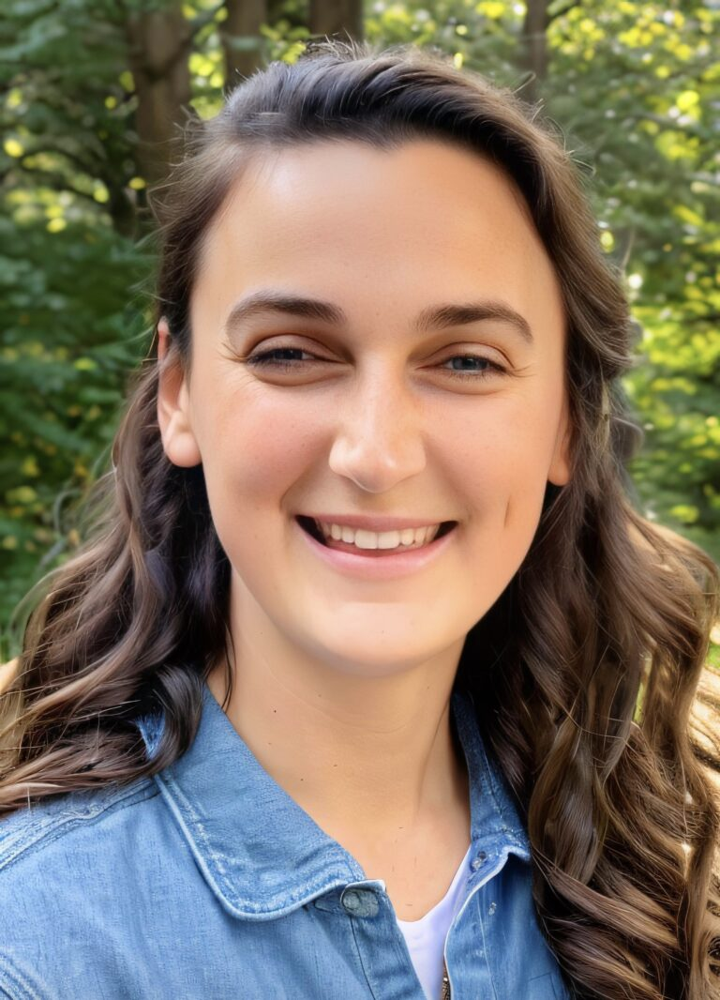
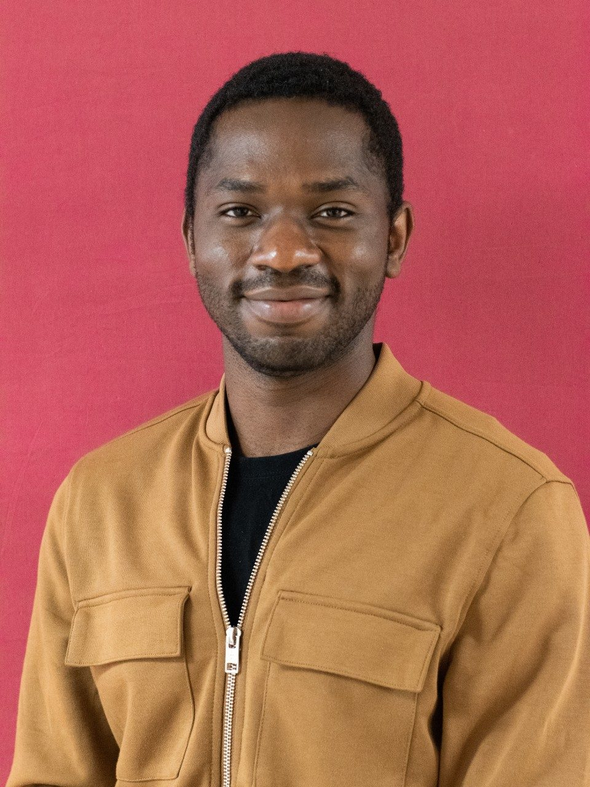

Alumni

Dr. Claire Murphy
PhD, Virginia Tech (co-supervised)
Current role: Assistant Professor & Extension Specialist
Irrigated Agriculture Research & Extension Center, Washington State University

Dr. Cyril Nsom Ayuk Etaka
PhD, Virginia Tech (co-supervised)
Current role: Postdoctoral Researcher
Department of Food Science & Technology, Virginia Tech
Reese Tierney
MPH, Georgia State/Centers for Disease Control and Prevention
Current role: Data Analyst
Partner Solutions, Truveta